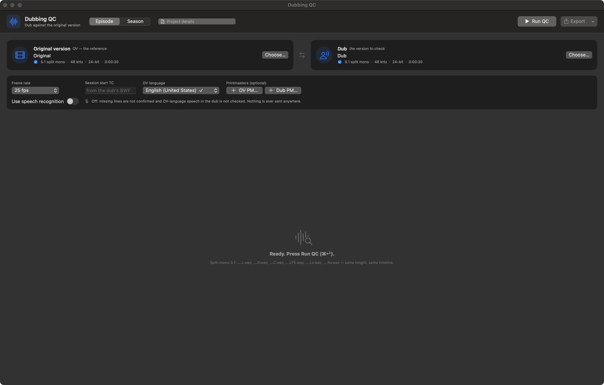
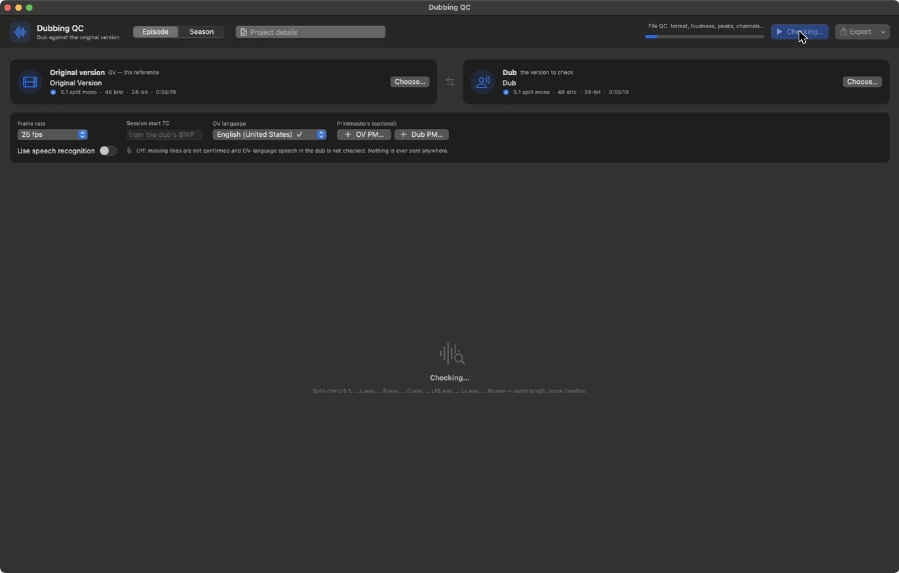
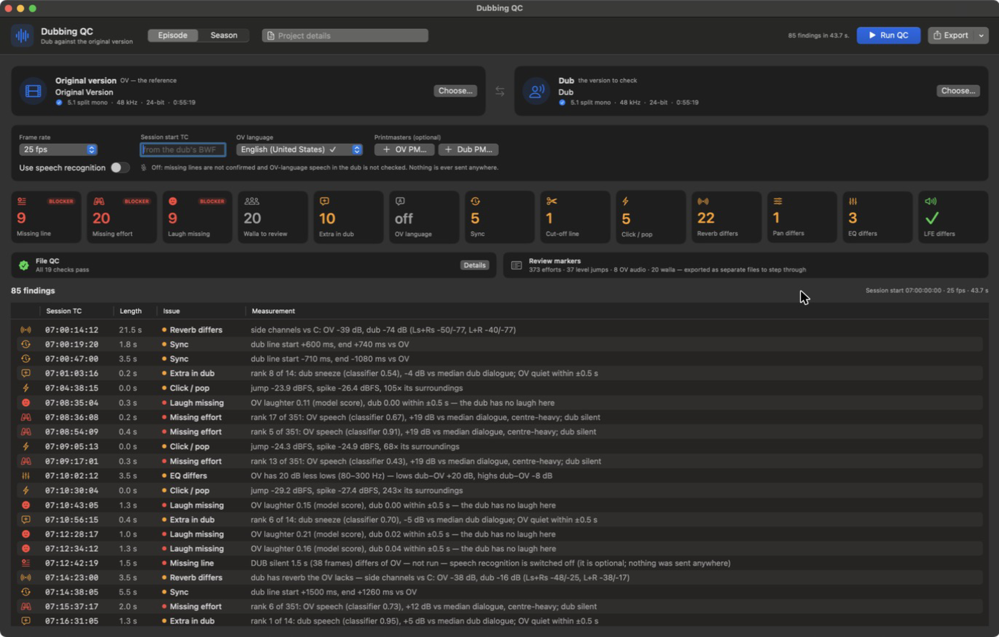

Check the dub against the original.
Before the client does.
Dubbing QC compares a dub's dialogue stem with the original-version (OV) stem and lists the places a mixer should listen to — missing lines and efforts, reverb and pan that don't match, drifted sync, clicks, walla and laughs the dub dropped.
Runs entirely on your Mac. Nothing is ever uploaded — not your audio, not your findings.






A real run, start to finish — click any screen to see it full size.
What it checks
Every threshold is measured, not guessed — against planted defects, real delivery-QC reports, and listening tests.
- Missing lines and efforts (breaths, laughs, reactions)
- Laughs the dub drops — also under dub speech
- Walla and crowd the dub is missing
- Extra sounds in the dub the OV doesn't have
- Reverb and pan that don't match the OV
- Whole-line sync shifts, and frame-accurate sync with printmasters
- Cut-off line endings
- Clicks, pops and dropouts
- Clipping and file-format problems
- EQ / voice-treatment mismatches (phone, radio)
- LFE content the dub adds, drops or mis-routes
- File naming against the OV's own convention
- Original-language audio or words left in the dub
- Printmaster sync and loudness against the OV
How it works
Drop in both versions
Split-mono 5.1 WAVs for the original and the dub — same length, same timeline. Printmasters are optional, for frame-accurate sync and loudness.
Run the checks
A full episode runs in under a minute. Every check is listed with its session timecode, length and exact measurement.
Export and review
Markers, a PDF report, and separate review files for the candidates the audio alone can't judge — so a QC operator always makes the final call.
Where things stand
Dubbing QC is in private alpha, in active use by a pilot dubbing studio. It isn't publicly available yet — thresholds are still being validated against real episodes and real client QC reports before a wider release.